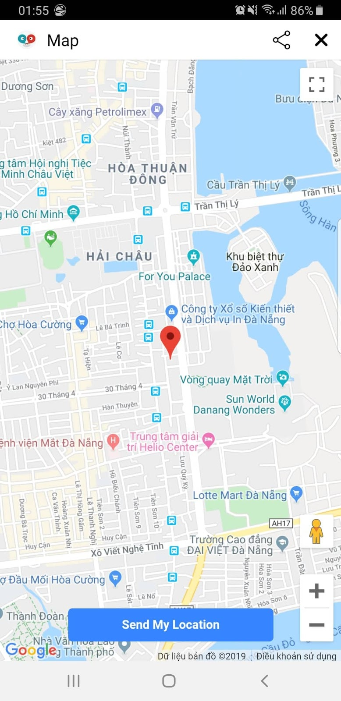

Block Hội Thoại
Đây là loại Block được dùng nhiều nhất khi tạo kịch bản bot, gồm 2 phần là Tin nhắn của bot và Tin nhắn của Khách.
2: Tên hội thoại.
3: Tin nhắn văn bản của Bot, có thể dùng biến số {{gender}} để lấy giới tính và {{first_name}} để lấy tên của Khách hàng.
4: Tin nhắn hình ảnh của Bot
5: Cài đặt thời gian chờ xuất hiện của tin nhắn sau so với tin nhắn trước. Nếu tin nhắn càng dài nên đặt thời gian chờ càng lâu để có cảm giác chat với người.
6: Chọn loại tin nhắn của người dùng để trả lời (ở ví dụ này là nút bấm), ngoài nút bấm còn hỗ trợ: trả lời nhanh, văn bản, thẻ ảnh...
7: Thêm tùy chọn để thêm nút bấm.
8: Chọn rẽ nhánh để khi người dùng click vào nút bấm sẽ cho xuất hiện hội thoại tương ứng kế tiếp.
1. Tin nhắn của Bot
Là tin nhắn mà khách hàng sẽ nhìn thấy khi chat với bot, có thể bao gồm văn bản, nút bấm, hình ảnh, video, âm thanh.
Văn bản: Chèn tin nhắn chữ
Hình ảnh: Chèn hình ảnh vào tin nhắn, khách hàng có thể download về máy tính, điện thoại. Chú ý phải là file có đuôi .jpg, .png
Video: Chèn hình ảnh vào tin nhắn, khách hàng có thể download về máy tính, điện thoại. Chú ý phải là file có đuôi .mp4
Nút bấm: Chèn nút bấm vào dưới tin nhắn hoặc hình ảnh, được chèn tối đa 3 nút, mỗi nút có thể chèn url, số điện thoại hay di chuyển tới kịch bản khác
Thời gian delay giữa các tin nhắn: Giúp cho bot trả lời giống người hơn
2. Tin nhắn của Khách
Là tin nhắn mà khách hàng trả lời bot, có thể lưu các thông tin cần thiết từ tin nhắn này vào google sheet.
2.1 Văn bản
Bot sẽ dừng chờ khách hàng nhập thông tin.
- Tự do: Khách hàng có thể nhập bất cứ tin nhắn nào.
- Họ và tên: Bot sẽ hiển thị Họ và tên facebook của khách hàng, tuy nhiên khách hàng có thể nhập lại họ và tên của mình. Nếu nhập sai bot sẽ hiển thị tin nhắn buộc khách hàng nhập lại. Bạn có thể hiển thị tin nhắn báo sai này hoặc tắt nó đi tại Cài đặt > Thông báo.
- Email: Bot sẽ hiển thị Email facebook của khách hàng, tuy nhiên khách hàng có thể nhập lại email của mình. Nếu nhập sai bot sẽ hiển thị tin nhắn buộc khách hàng nhập lại. Bạn có thể hiển thị tin nhắn báo sai này hoặc tắt nó đi tại Cài đặt > Thông báo.
- Số điện thoại: Bot sẽ hiển thị Số điện thoại facebook của khách hàng, tuy nhiên khách hàng có thể nhập lại số điện thoại của mình. Nếu nhập sai bot sẽ hiển thị tin nhắn buộc khách hàng nhập lại. Bạn có thể hiển thị tin nhắn báo sai này hoặc tắt nó đi tại Cài đặt > Thông báo.
2.2 Trả lời nhanh
Bot sẽ hiển thị trả lời nhanh cho khách hàng chọn.
- Nội dung: Bạn được tạo tối đa 11 nút, mỗi nút không được vượt quá 20 ký tự. Khi người dùng chọn thì nút này sẽ biến mất.
- Rẽ nhánh: Nếu bạn tạo nhiều nút và tùy chọn này được bật thì bạn có thể chuyển hướng luồng hội thoại dựa trên nút mà khách hàng chọn.
- Bắt buộc chọn đúng: Nếu bạn tạo nhiều nút và tùy chọn này được bật thì khách hàng phải chọn đúng một trong những nút này.
2.3 Nút bấm
Bot sẽ hiển thị nút bấm cho khách hàng chọn.
- Nội dung: Bạn được tạo tối đa 3 nút, mỗi nút không được vượt quá 20 ký tự. Khi người dùng chọn thì nút này sẽ không biến mất. Trong mỗi nút bạn có thể cài đặt url, số điện thoại, chia sẻ. Rất thích hợp để làm menu.
- Rẽ nhánh: Nếu bạn tạo nhiều nút và tùy chọn này được bật thì bạn có thể chuyển hướng luồng hội thoại dựa trên nút mà khách hàng chọn.
- Bắt buộc chọn đúng: Nếu bạn tạo nhiều nút và tùy chọn này được bật thì khách hàng phải chọn đúng một trong những nút này.
2.4 Thẻ ảnh
Bot sẽ hiển thị thẻ ảnh cho khách hàng chọn.
- Nội dung: Bạn được tạo tối đa 10 thẻ ảnh, mỗi thẻ ảnh gồm Tiêu đề, Nội dung và chứa tối đa 3 nút bấm. Khi người dùng chọn thì thẻ ảnh này sẽ không biến mất. Trong mỗi nút bạn có thể cài đặt url, số điện thoại, chia sẻ. Rất thích hợp để hiển thị sản phẩm cho người dùng chọn/đặt.
- Rẽ nhánh: Nếu bạn tạo nhiều thẻ ảnh và tùy chọn này được bật thì bạn có thể chuyển hướng luồng hội thoại dựa trên thẻ ảnh mà khách hàng chọn.
- Bắt buộc chọn đúng: Nếu bạn tạo nhiều thẻ ảnh và tùy chọn này được bật thì khách hàng phải chọn đúng một trong những thẻ ảnh này.
2.5 Tệp đính kèm
Yêu cầu khách hàng tải lên tệp đính kèm có thể là hình ảnh, âm thanh, tài liệu... Rất phù hợp để yêu cầu khách hàng cung cấp hình ảnh hay cmnd để tư vấn hoặc cho vay.
2.6 Web Form
Hiển thị form nhập thông tin cho khách hàng. Rất phù hợp để yêu cầu khách hàng cung cấp số điện thoại, địa chỉ để tặng quà.
2.7 Vị trí
Hiển thị map để khách hàng cung cấp vị trí hiện tại. Rất phù hợp để xây dựng bot checkin cộng điểm thành viên thân thiết.

3. Kết nối các hội thoại
4. Gắn hành động
Hành động là cách chúng ta muốn làm gì đó khi khách hàng trả lời tin nhắn của bot. Có thể là lưu thông tin khách hàng như số điện thoại, cũng có thể là gắn thẻ để chăm sóc khách hàng về sau..v..v
Hành động có thể được gắn thủ công tại giao diện Khách hàng hay tự động bằng cách đưa vào Tin nhắn của Khách hoặc Từ khóa. Có tất cả 10 loại:
- Gắn thẻ: Gắn thẻ để phân loại khách hàng, nhằm mục đích remarketing về sau, không giới hạn số lượng thẻ được gán.
- Gỡ thẻ: Gỡ thẻ khỏi khách hàng khi không cần dùng nữa.
- Gắn chăm sóc: Sau khi gắn thì tin nhắn sẽ tự động gửi đến khách hàng dựa trên thời gian cài đặt của chăm sóc.
- Gỡ chăm sóc: Gỡ chăm sóc thì tin nhắn sẽ không tự động gửi nữa. Chú ý: nếu sau khi gỡ ra và gắn lại thì tin nhắn chăm sóc sẽ gửi lại từ đầu.
- Set giá trị số: Set giá trị số vào lựa chọn của người dùng để lấy ra sử dụng khi cần thiết. Ví dụ câu trắc nghiệm có 4 đáp án trả lời nhanh A, B, C, D, và 4 đáp án này có ID tương ứng là 1, 2, 3, 4 thì nếu khách chọn A ta set giá trị số là 1, B ta set giá trị số là 2, C ta set giá trị số là 3, D ta set giá trị số là 4.
- Lưu thuộc tính: Lưu tin nhắn của người dùng vào custom field như ngày sinh, ngày mua hàng để gửi tin nhắn chăm sóc khách hàng tốt hơn sau này.
- Xóa thuộc tính: Xóa tin nhắn của người dùng khỏi custom field khi không cần nữa, nếu người dùng chưa có custom field thì hành động này sẽ tự động bỏ qua.
- Đăng ký nhận tin: Với trạng thái này khách hàng có thể nhận tin nhắn từ Gửi broadcast và Chăm sóc. Đây cũng là trạng thái mặc định của khách hàng sau khi chat với bot.
- Hủy đăng ký nhận tin: Với trạng thái này khách hàng sẽ không nhận tin nhắn từ Gửi broadcast và Chăm sóc. Tất nhiên, chức năng trả lời tự động của bot không bị ảnh hưởng.
- Dừng bot chờ nhân viên: Bot sẽ dừng trả lời tự động với khách hàng này trong vòng 24h cho đến khi bạn Đánh dấu là xong trong Live chat.
- Thông báo đến admin: Bot sẽ gửi thông báo qua messenger đến admin được chọn khi khách thực hiện thao tác nào đó.
- Chuyển tiếp kịch bản: Giúp bot chuyển đến bất kỳ kịch bản nào mà bạn muốn. Có thể di chuyển đến kịch bản bắt đầu hay kịch bản từ khóa tùy ý.
Cách gắn hành động:
4.1 Tại menu khách hàng
4.2 Tại menu Trả lời tự động
4.3 Tại Block
Bạn có bất kỳ câu hỏi nào liên quan đến Block HỘI THOẠI? Bạn muốn khởi chạy chiến dịch tiếp cận khách hàng của mình bằng Chatbot với một số lời khuyên chuyên môn từ Đối tác tiếp thị của Facebook? Đừng ngần ngại liên hệ với chúng tôi để có câu trả lời nhanh nhất và hiệu quả nhất! Tận hưởng công cụ chatbot miễn phí của chúng tôi mà không cần phải trả bất kì chi phí nào!